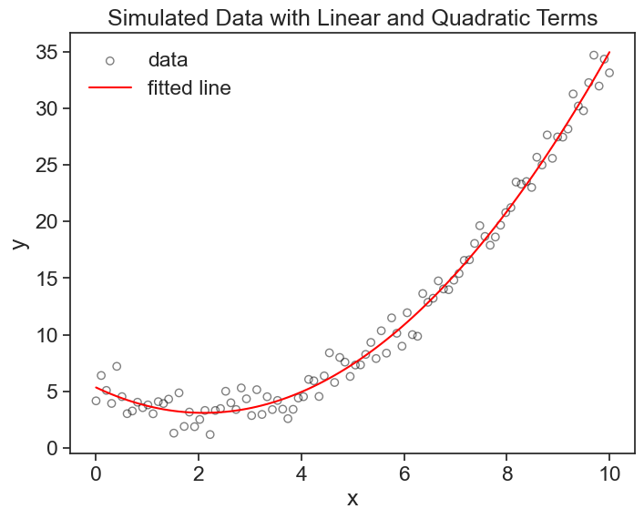

14 least squares
14.1 ordinary least squares (OLS) regression
Let’s go over a few things that appear in this notebook, statsmodels, Ordinary Least Squares
14.2 polynomial regression
Let’s start with a simple polynomial regression example. We will start by generating synthetic data for a quadratic equation plus some noise.
# number of points
nsample = 100
# create independent variable x
x = np.linspace(0, 10, 100)
# create design matrix with linear and quadratic terms
X = np.column_stack((x, x ** 2))
# create coefficients array
beta = np.array([5, -2, 0.5])
# create random error term
e = np.random.normal(size=nsample)x and e can be understood as column vectors of length n, while X and \beta are:
X = \begin{pmatrix} x_0 & x_0^2 \\ | & | \\ x_i & x_i^2 \\ | & | \\ x_n & x_n^2 \\ \end{pmatrix}, \qquad \beta = \begin{pmatrix} \beta_0 \\ \beta_1 \\ \beta_2 \end{pmatrix}.
Oops, there is no intercept column \vec{1} in the design matrix X. Let’s add it:
[[1. 0. 0. ]
[1. 0.1010101 0.01020304]
[1. 0.2020202 0.04081216]
[1. 0.3030303 0.09182736]
[1. 0.4040404 0.16324865]]This add_constant function is smart, it has as default a prepend=True argument, meaning that the intercept is added as the first column, and a has_constant='skip' argument, meaning that it will not add a constant if one is already present in the matrix.
The matrix X is now a design matrix for a polynomial regression of degree 2. X = \begin{pmatrix} 1 & x_0 & x_0^2 \\ | & | & | \\ 1 & x_i & x_i^2 \\ | & | & | \\ 1 & x_n & x_n^2 \\ \end{pmatrix}
We now put everything together in the following equation:
y = X \beta + e
This creates the dependend variable y as a linear combination of the independent variables in X and the coefficients in \beta, plus an error term e.
Let’s visualize this:
14.3 solving the “hard way”
I’m going to do something that nobody does. I will use the formula we derived in the previous chapter to find the coefficients \beta of the polynomial regression.
\beta = (X^TX)^{-1}X^Ty.
Translating this into code, and keeping in mind that matrix multiplication in Python is done with the @ operator, we get:
beta = [ 5.34233516 -2.14024948 0.51025357]That’s it. We did it (again).
Let’s take a look at the matrix X^TX. Because X is a tall and skinny matrix of shape (n, 3), the matrix X^T is a wide and short matrix of shape (3, n). This is because we have many more data points n than the number of predictors (\vec{1},x,x^2), which is of course equal to the number of coefficients (\beta_0,\beta_1,\beta_2).
[[1.00000000e+02 5.00000000e+02 3.35016835e+03]
[5.00000000e+02 3.35016835e+03 2.52525253e+04]
[3.35016835e+03 2.52525253e+04 2.03033670e+05]]When we multiply the matrices X^T_{3\times n} and X_{n\times 3}, we get a square matrix of shape (3, 3), because the inner dimensions match (the number of columns in X^T is equal to the number of rows in X). The product X^TX is a square matrix of shape (3, 3), which is quite easy to invert. If it were the other way around (X\,X^T), we would have a matrix of shape (n, n), which is much harder to invert, especially if n is large. Lucky us.
Now let’s see if the parameters we found are any good.
print("beta parameters used to generate data:")
print(beta)
print("beta parameters estimated from data:")
print(beta_opt)beta parameters used to generate data:
[ 5. -2. 0.5]
beta parameters estimated from data:
[ 5.34233516 -2.14024948 0.51025357]Pretty good, right? Now let’s see the best fit polynomial on the graph.
plot

Why did I call it the “hard way”? Because these operations are so common that of course there are libraries that do this for us. We don’t need to remember the equation, we can just use, for example, statsmodels library’s OLS function, which does exactly this. Let’s see how it works.
Now we can compare the results of our manual calculation with the results from statsmodels. We should get the same coefficients, and we do.
print("beta parameters used to generate data:")
print(beta)
print("beta parameters from our calculation:")
print(beta_opt)
print("beta parameters from statsmodels:")
print(results.params)beta parameters used to generate data:
[ 5. -2. 0.5]
beta parameters from our calculation:
[ 5.34233516 -2.14024948 0.51025357]
beta parameters from statsmodels:
[ 5.34233516 -2.14024948 0.51025357]14.4 statmodels.OLS and the summary
Statmodels provides us a lot more information than just the coefficients. Let’s take a look at the summary of the OLS regression.
OLS Regression Results
==============================================================================
Dep. Variable: y R-squared: 0.988
Model: OLS Adj. R-squared: 0.988
Method: Least Squares F-statistic: 3965.
Date: Mon, 23 Jun 2025 Prob (F-statistic): 9.77e-94
Time: 12:50:31 Log-Likelihood: -146.51
No. Observations: 100 AIC: 299.0
Df Residuals: 97 BIC: 306.8
Df Model: 2
Covariance Type: nonrobust
==============================================================================
coef std err t P>|t| [0.025 0.975]
------------------------------------------------------------------------------
const 5.3423 0.313 17.083 0.000 4.722 5.963
x1 -2.1402 0.145 -14.808 0.000 -2.427 -1.853
x2 0.5103 0.014 36.484 0.000 0.482 0.538
==============================================================================
Omnibus: 2.042 Durbin-Watson: 2.274
Prob(Omnibus): 0.360 Jarque-Bera (JB): 1.875
Skew: 0.234 Prob(JB): 0.392
Kurtosis: 2.519 Cond. No. 144.
==============================================================================
Notes:
[1] Standard Errors assume that the covariance matrix of the errors is correctly specified.I won’t go into the details of the summary, but I encourage you to take a look at it and see if you can make sense of it.
14.5 any function will do
The formula we derived the the previous chapter works for predictors (independent variables) of any kind, not only polynomials. The formula will work as long as the parameters \beta are linear in the predictors. For exammple, we could have a nonlinear function like this:
y = \beta_0 + \beta_1 e^x + \beta_2 \sin(x^2)
because each beta multiplies a predictor. On the other hand, the following function would not work, because the parameters are not linear in the predictors:
y = \beta_0 + e^{\beta_1 x} + \sin(\beta_2 x^2)
Let’s this this in action, I’ll use the same example provided by statsmodels documentation, which is a nonlinear function of the form:
y = \beta_0 x + \beta_1 \sin(x) + \beta_2(x - 5)^2 + \beta_3
Show the code

OLS Regression Results
==============================================================================
Dep. Variable: y R-squared: 0.933
Model: OLS Adj. R-squared: 0.928
Method: Least Squares F-statistic: 211.8
Date: Mon, 23 Jun 2025 Prob (F-statistic): 6.30e-27
Time: 12:51:08 Log-Likelihood: -34.438
No. Observations: 50 AIC: 76.88
Df Residuals: 46 BIC: 84.52
Df Model: 3
Covariance Type: nonrobust
==============================================================================
coef std err t P>|t| [0.025 0.975]
------------------------------------------------------------------------------
x1 0.4687 0.026 17.751 0.000 0.416 0.522
x2 0.4836 0.104 4.659 0.000 0.275 0.693
x3 -0.0174 0.002 -7.507 0.000 -0.022 -0.013
const 5.2058 0.171 30.405 0.000 4.861 5.550
==============================================================================
Omnibus: 0.655 Durbin-Watson: 2.896
Prob(Omnibus): 0.721 Jarque-Bera (JB): 0.360
Skew: 0.207 Prob(JB): 0.835
Kurtosis: 3.026 Cond. No. 221.
==============================================================================
Notes:
[1] Standard Errors assume that the covariance matrix of the errors is correctly specified.Note something interesting: in our design matrix X, we encoded the intercept column as the last column, there is no reason why it should be the first column (although first column is a common choice). The function ‘statsmodels.OLS’ sees this, and when we print the summary, it will show the intercept as the last coefficient. Nice!
Let’s see a graph of the data and the fitted model.